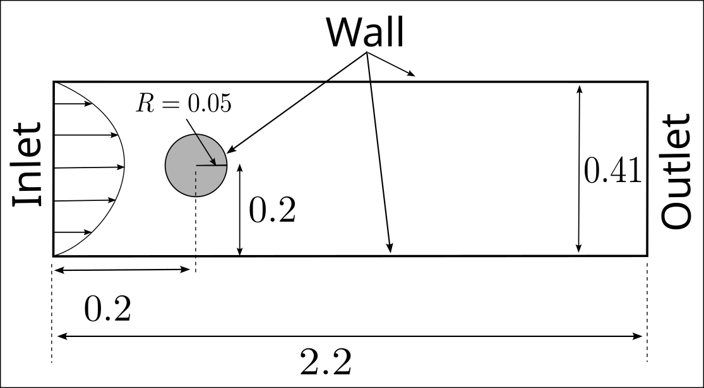
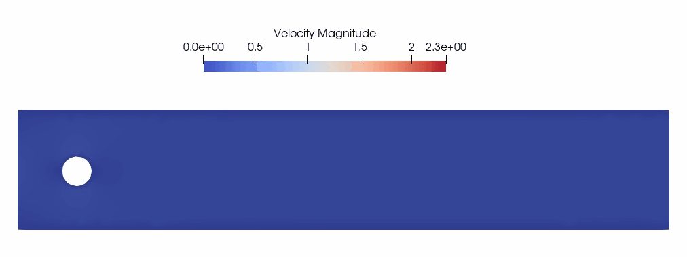
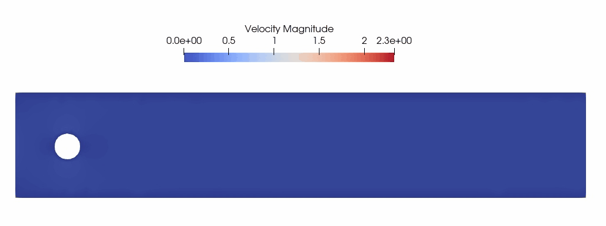

Incompressible Navier-Stokes (FEM) - flow around a cylinder
In this example, the laminar flow around a cylinder is simulated by solving the incompressible Navier-Stokes equations. The equations are discretized and solved using two methods, the projection method and the "mixed form" method. This tutorial is based on a DFG Benchmark and is also an example in Ferrite.jl.
Description of the case
The simulation domain consists in a channel bounded above and below by two walls and within which a cylinder is placed. The geometrical parameters of the case are shown in the Figure below.

The flow around the cylinder is governed by the incompressible Navier-Stokes equations (here $\rho=1$):
\[ \partial_t u + u \cdot \nabla u = - \nabla p + \nu \Delta u\]
\[ \nabla \cdot u = 0\]
To discretize the equations $\mathbb{P}_2$-$\mathbb{P}_1$ elements are used (Taylor-Hood).
No-slip boundary conditions are applied on all walls. The inlet is given by an imposed parabolic velocity profile which is ramped up in time:
\[ u(t,x,y) = u_{in}(t) \times \left( 4 y (0.41-y)/0.41^2 , 0 \right)\]
where $u_{in}(t) = \textrm{clamp}(t,0.0,1.5)$.
At the outlet, $p=0$ is imposed when using the projection method and a "do-nothing" ($-pn + \nu \nabla u \cdot n = 0$) condition is applied when using the "mixed form" method.
Code
Load the necessary packages
const dir = string(@__DIR__, "/") # bcube/example dir
using Bcube
using LinearAlgebra
using WriteVTK
using StaticArraysFunction space (here we shall use Taylor-Hood P2-P1 elements) and quadrature degree.
const fspace = :Lagrange
const degree_u = 2
const degquad = 2 * degree_u + 1
const degree_p = 1Input and output paths
const outputpath = joinpath(dir, "..", "..", "..", "myout", "navier_stokes/")
const meshpath = joinpath(dir, "../../../input/mesh/cylinder_navier_stokes_tri.msh")Kinematic viscosity
const ν = 0.001Time step and simulation time
const Δt = 1.0e-3
const finalTime = 6.0Function that defines the inlet velocity profile
function inlet_velocity(x, t)
SA[4.0 * clamp(t, 0.0, 1.5) * x[2] * (0.41 - x[2]) / (0.41 * 0.41), 0.0]
endFunction that solves the problem using the projection method
function run_unsteady_projection_method()Read mesh
mesh = read_msh(meshpath)Definition of trial and test function spaces (with associated Dirichlet boundary conditions)
fsu = FunctionSpace(fspace, degree_u)
U_vel = TrialFESpace(
fsu,
mesh,
Dict(
"left" => inlet_velocity,
"top" => SA[0.0, 0.0],
"bottom" => SA[0.0, 0.0],
"cylinder" => SA[0.0, 0.0],
); #
size = 2,
)
V_vel = TestFESpace(U_vel)
fsp = FunctionSpace(fspace, degree_p)
U_pre = TrialFESpace(fsp, mesh, Dict("right" => SA[0.0]); size = 1)
V_pre = TestFESpace(U_pre)
velocity = FEFunction(U_vel)
pressure = FEFunction(U_pre)Define measures for cell
dΩ = Measure(CellDomain(mesh), degquad)Definition of bilinear and linear forms Tentative velocity forms
m1(u, v) = ∫(u ⋅ v)dΩ
# function l1(v)
# ∫(velocity ⋅ v)dΩ - Δt * ∫(ν * ∇(velocity) ⊡ ∇(v) + (∇(velocity) * velocity) ⋅ v)dΩ
# end
# Below is an equivalent définition of l1(v) that yields better performance thanks to the use of composition
function l1(v)
f(u, ∇u, v, ∇v) = u ⋅ v - Δt * (ν * ∇u ⊡ ∇v + (∇u * u) ⋅ v)
∫(f ∘ (velocity, ∇(velocity), v, ∇(v)))dΩ
endPressure forms
a2(p, q) = ∫(∇(p) ⋅ ∇(q))dΩ
# l2(q) = (-1.0 / Δt) * ∫(tr(∇(velocity)) ⋅ q)dΩ
# Below is an equivalent définition of l2(v) that yields better performance thanks to the use of composition
function l2(q)
f(∇u, q) = (-1.0 / Δt) * (tr(∇u) ⋅ q)
∫(f ∘ (∇(velocity), q))dΩ
endVelocity correction forms
# l3(v) = ∫(velocity ⋅ v)dΩ - Δt * ∫(∇(pressure) ⋅ v)dΩ
# Below is an equivalent définition of l3(v) that yields better performance thanks to the use of composition
function l3(v)
f(u, ∇p, v) = u ⋅ v - Δt * ∇p ⋅ v
∫(f ∘ (velocity, ∇(pressure), v))dΩ
endAssemble and factorize matrices
M1 = assemble_bilinear(m1, U_vel, V_vel)
M0 = copy(M1)
Bcube.apply_dirichlet_to_matrix!(M1, U_vel, V_vel, mesh)
f_M1 = factorize(M1)
A2 = assemble_bilinear(a2, U_pre, V_pre)
Bcube.apply_dirichlet_to_matrix!(A2, U_pre, V_pre, mesh)
f_A2 = factorize(A2)Time stepping
time = 0.0
itime = 0
while time <= finalTime
time += Δt
itime += 1
println("Time stepping : time = ", time, " / ", finalTime)
# assemble l1
L1 = assemble_linear(l1, V_vel)
Wd = Bcube.assemble_dirichlet_vector(U_vel, V_vel, mesh, time)
# Apply lift
L1 = L1 - M0 * Wd
# Apply homogeneous Dirichlet condition
Bcube.apply_homogeneous_dirichlet_to_vector!(L1, U_vel, V_vel, mesh)
# Compute tentative velocity
sol = f_M1 \ L1
set_dof_values!(velocity, sol .+ Wd)
# Assemble l2
L2 = assemble_linear(l2, V_pre)
Bcube.apply_homogeneous_dirichlet_to_vector!(L2, U_pre, V_pre, mesh)
# Compute pressure
sol = f_A2 \ L2
set_dof_values!(pressure, sol)
# Assemble l3
L3 = assemble_linear(l3, V_vel)
# Apply lift
L3 = L3 - M0 * Wd
# Apply homogeneous Dirichlet condition
Bcube.apply_homogeneous_dirichlet_to_vector!(L3, U_vel, V_vel, mesh)
# Velocity correction step
sol = f_M1 \ L3
set_dof_values!(velocity, sol .+ Wd)
# Write outputs
if itime % 100 == 0
vars = Dict("Velocity" => velocity, "Pressure" => pressure)
Bcube.write_vtk_lagrange(
joinpath(outputpath, "output_projection"),
vars,
mesh,
itime,
time,
)
end
end
endThe animation below shows the result of simulation with the projection method: 
Function that solves the problem using a mixed formalism
function run_unsteady_mixed()Read mesh
mesh = read_msh(meshpath)Definition of trial and test function spaces (with associated Dirichlet boundary conditions)
fsu = FunctionSpace(fspace, degree_u)
U_vel = TrialFESpace(
fsu,
mesh,
Dict(
"left" => inlet_velocity,
"top" => SA[0.0, 0.0],
"bottom" => SA[0.0, 0.0],
"cylinder" => SA[0.0, 0.0],
);
size = 2,
)
V_vel = TestFESpace(U_vel)
fsp = FunctionSpace(fspace, degree_p)
U_pre = TrialFESpace(fsp, mesh; size = 1)
V_pre = TestFESpace(U_pre)
U = MultiFESpace(U_vel, U_pre)
V = MultiFESpace(V_vel, V_pre)
velocity = FEFunction(U_vel)
pressure = FEFunction(U_pre)Define measures for cell
dΩ = Measure(CellDomain(mesh), degquad)Definition of bilinear and linear forms
m((u, p), (v, q)) = ∫(u ⋅ v)dΩ
a((u, p), (v, q)) = ∫(ν * ∇(u) ⊡ ∇(v) - tr(∇(v)) * p + tr(∇(u)) * q)dΩ
l((v, q)) = -∫((∇(velocity) * velocity) ⋅ v)dΩAssemble and factorize matrices
M = assemble_bilinear(m, U, V)
A = assemble_bilinear(a, U, V)
L = assemble_linear(l, V)
A0 = copy(A)
Bcube.apply_dirichlet_to_matrix!(A, U, V, mesh)
Bcube.apply_dirichlet_to_matrix!(M, U, V, mesh)
f_Mtime = factorize(M .+ Δt * A)
ϕ = FEFunction(V)Time stepping
time = 0.0
itime = 0
sol = zero(L)
while time <= finalTime
time += Δt
itime += 1
println("Time stepping : time = ", time, " / ", finalTime)
L = assemble_linear(l, V)
Wd = Bcube.assemble_dirichlet_vector(U, V, mesh, time)
# Apply lift
L = L - A0 * Wd
# Apply homogeneous Dirichlet condition
Bcube.apply_homogeneous_dirichlet_to_vector!(L, U, V, mesh)
# Compute solution
sol = f_Mtime \ (Δt * L + M * sol)
set_dof_values!(ϕ, sol .+ Wd)
velocity, pressure = ϕ
# Write outputs
if itime % 100 == 0
vars = Dict("Velocity" => velocity, "Pressure" => pressure)
Bcube.write_vtk_lagrange(
joinpath(outputpath, "output_mixed"),
vars,
mesh,
itime,
time,
)
end
end
endThe animation below shows the result of simulation with the "mixed form" method: 
println(" ")
println("---------------------------------------------------")
println("--------- solving with projection method ----------")
@time begin
run_unsteady_projection_method()
end
println("---------------------------------------------------")
println(" ")
println("---------------------------------------------------")
println("--------- solving with mixed form method ----------")
@time begin
run_unsteady_mixed()
end
println("---------------------------------------------------")
println(" ")This page was generated using Literate.jl.